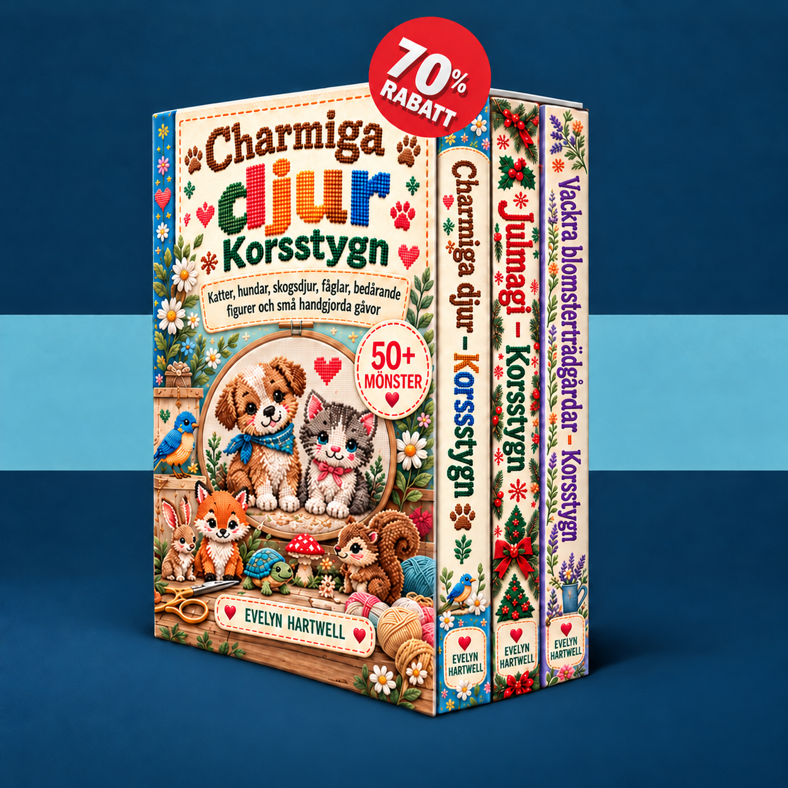

Välj ett litet motiv, lär dig läsa räknemönstret och brodera ditt första projekt steg för steg.
Dina mönster laddas…
Aktivera JavaScript för medlemsområdet eller öppna böckerna direkt via länkarna nedan.
Skicka ett e-postmeddelande